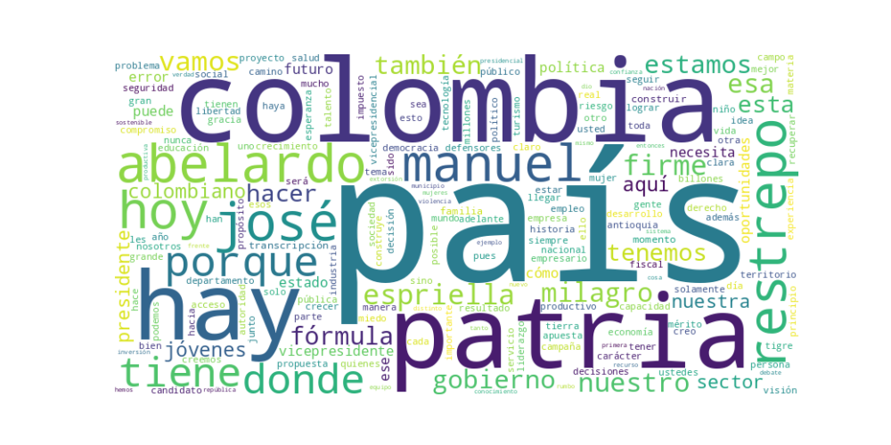

Seguidores: 146,593
REPORTE DE ANÁLISIS DE COMUNICACIÓN: JOSÉ MANUEL RESTREPO (FÓRMULA VICEPRESIDENCIAL DE ABELARDO DE LA ESPRIELLA)
El estilo de comunicación del candidato José Manuel Restrepo es académico-profesional, con toques cercanos y estrategias de popularización. Aunque su base discursiva es formal, técnica y propia de su formación como economista y exrector universitario, hace un esfuerzo constante por conectar con audiencias más amplias. Utiliza un lenguaje claro y didáctico para explicar conceptos económicos complejos (déficit fiscal, crecimiento del PIB, autonomía del Banco de la República), pero también incorpora elementos de cercanía: comparte anécdotas personales (la quiebra de su padre, el feminicidio de su sobrina), baila reguetón en entrevistas y emplea un tono motivacional. Es una comunicación híbrida: rigurosa en el fondo, adaptable y cercana en la forma, dirigida a validar su experticia sin perder conexión emocional.
Tono crítico, urgente y propositivo, con un subtono esperanzador. Es predominantemente crítico y confrontacional hacia el gobierno de Gustavo Petro y su "continuismo" (Iván Cepeda), a los que acusa de destrucción económica, inseguridad y polarización. Transmite urgencia, describiendo la elección como un punto de "antes y después" donde Colombia se juega "el todo por el todo". Sin embargo, este diagnóstico catastrófico se contrapesa con un tono propositivo (detalla planes sectoriales) y un mensaje esperanzador final: la posibilidad de construir una "Patria Milagro".
La estrategia de comunicación de José Manuel Restrepo está diseñada para posicionar la fórmula como la opción técnica, seria y con valores frente a un gobierno percibido como caótico e ideologizado. Se dirige a un electorado amplio pero con énfasis en: 1) Clase media y empresariado alarmados por la economía y la seguridad; 2) Jóvenes desencantados pero esperanzados en oportunidades; 3) Electores conservadores que valoran la familia, la fe y el orden. Busca evocar, primero, preocupación y urgencia con un diagnóstico crudo, para luego canalizar ese sentimiento hacia esperanza y adhesión a un proyecto redentor ("Patria Milagro"). Su rol complementa al candidato presidencial: aporta credibilidad técnica y académica a un proyecto que se vende como de "carácter" y liderazgo outsider, construyendo un puente entre el diagnóstico de crisis y la promesa de una reconstrucción competente y con principios.
1. Resumen del Patrón de Éxito: El patrón de éxito se basa en una narrativa épica de salvación nacional, que combina un diagnóstico de crisis institucional y social con una promesa de restauración y renacimiento. El discurso pivota entre dos polos emocionales: la urgencia y el peligro del momento presente, y la esperanza y el orgullo de un futuro próximo ("La Patria Milagro"). No se trata de un contenido técnico o administrativo, sino de un llamado emocional a la defensa de la nación y a la construcción de un nuevo rumbo, dirigido a un electorado que percibe riesgo y anhela un cambio de dirección.
2. Tácticas de Comunicación Clave:
3. Temas de Mayor Resonancia: Los temas que generan mayor interacción son aquellos que tocan fibra nacionalista e institucional, combinados con dolor social concreto: * Defensa de las Instituciones Democráticas: Atacar al gobierno por debilitar la Corte, el Banco de la República, los medios, etc. * La "Crisis Nacional" y la Elección Existencial: La narrativa de que Colombia está en un punto de quiebre y la elección es una disyuntiva histórica. * Fallas Tangibles en Servicios Públicos: La crítica a la destrucción en salud, el derroche burocrático y las historias de vulnerabilidad (niños sin medicamentos, jóvenes sin educación). * La Promesa de un Renacimiento Nacional ("La Patria Milagro"): La visión de un país que "vuelve a creer en sí mismo", con grandeza y carácter.
4. Perfil de la Audiencia Implícita: El discurso apunta a una audiencia amplia pero con un núcleo emocional definido: votantes de centro y centro-derecha que se sienten desilusionados, preocupados o en desacuerdo con la dirección actual del país. No es un lenguaje técnico para expertos, sino accesible y emotivo. Habla tanto a la base leal que necesita reafirmación y movilización, como a los indecisos o desencantados que perciben una crisis y anhelan un liderazgo que ofrezca seguridad, orden y un futuro inspirador. El enfoque en jóvenes vulnerables y adultos mayores busca ampliar el alcance más allá del núcleo duro.
5. Conclusión Estratégica: La clave fundamental del poder de su discurso es la conversión de la política en una epopeya moral. No vende solo políticas públicas; vende una misión nacional de rescate y renacimiento. Lo que lo diferencia del discurso político tradicional es su habilidad para empaquetar una crítica política dura dentro de una narrativa emocionalmente cargada de esperanza, utilizando un lenguaje simple pero grandioso ("Patria Milagro", "grandeza", "carácter"). Transforma una elección política en una elección existencial e histórica, donde votar por él es un acto de defensa patriótica y fe en un futuro redimido. Su potencia reside en conectar el malestar inmediato con una promesa de futuro glorioso, ofreciéndose no solo como un administrador, sino como el guía de esa travesía nacional.

Caption: Con @delaespriella_style estamos comprometidos en recuperar la buena gerencia pública en @delaespriella_style La buena gerencia pública siempre da réditos en beneficio de la política social y del desarrollo del país. El 7 de agosto de 2026 arranca la recuperación de nuestro activo más valioso y patrimonio de colombia 🇨🇴 y de cientos de miles de familias en el país bajo la conducción de una dupla presidencial y vicepresidencial que tiene experiencia de sobra en gerencia
Likes: 10,889 | Comentarios: 380 | Reproducciones: 55,859
Ver en InstagramCaption: Con @delaespriella_style estamos comprometidos en recuperar la buena gerencia pública en @ECOPETROL_SA La buena gerencia pública siempre da réditos en beneficio de la política social y del desarrollo del país. El 7 de agosto de 2026 arranca la recuperación de nuestro activo más valioso y patrimonio de colombia 🇨🇴 y de cientos de miles de familias en el país bajo la conducción de una dupla presidencial y vicepresidencial que tiene experiencia de sobra en gerencia
Likes: 8,586 | Comentarios: 657 | Reproducciones: 44,719
Ver en InstagramCaption: MI REFLEXION HOY !! Hay momentos en la historia de un país en los que aplazar la discusión o caer en la tibieza resulta peligroso. Colombia 🇨🇴 está en uno de ellos. Cuando se ataca al Consejo de Estado, a la Corte Constitucional, al Banco de la República, al Congreso, a los medios de comunicación, al Consejo Nacional Electoral, a la Registraduría, entre otros, no solo se desafían las instituciones, sino se debilita la democracia y se erosionan los cimientos de la patria. Ya lo hemos visto con Petro: cuando una institución no sirve a su agenda, se convierte en blanco de ataque. Con Iván Cepeda, ese camino no se detiene, se profundiza. En ello la constituyente deja de ser solo una advertencia para convertirse en un plan real de destrucción de la democracia. La historia es clara: las repúblicas no caen de un día para otro; caen cuando mirar hacia otro lado se vuelve más fácil que defender lo esencial, cuando la indiferencia reemplaza el carácter. Colombia enfrenta hoy una pregunta de fondo: ¿qué país estamos dispuestos a defender… y cuál estamos dispuestos a perder? @delaespriella_style Que opina??
Likes: 5,051 | Comentarios: 291 | Reproducciones: 27,025
Ver en Instagram